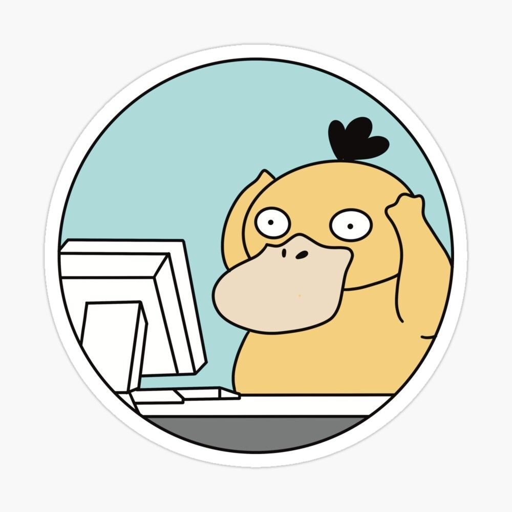

Julie Durand
Étudiante en BTS SIO
- ✉️ juju2505@hotmail.fr
Années d'études
Documentations
Expériences pro
Mois en alternance
Qui suis-je ?
Je suis une étudiante passionnée en BTS SIO à IRIS avec une spécialisation en SLAM. Je suis également en alternance dans l'entreprise Kyriba en tant qu'IT support niveau 3.
Mon objectif est de développer différentes connaissances que ce soit en développement ou dans les connaissances dans les différents systèmes OS.
Points forts
- • Autonome
- • Rigueur
- • Écoute
- • Capacité d'adaptation
Centres d'intérêt
- • Systèmes d'exploitation
- • Nouvelles technologies
- • Graphisme
- • Photographie
Compétences Techniques
Découvrez mes compétences techniques
Support et mise à disposition des services informatiques
Windows 11 et 10
Maîtrise de l'environnement Windows 11 et 10 : installation, configuration, maintenance et assistance utilisateur.

MacOS
Maîtrise de l'environnement Apple : configuration système, gestion des mises à jour et assistance utilisateur sur MacBook et iMac.

JIRA
Utilisation de la plateforme pour la gestion de projets et le suivi des tickets (Ticketing). Suivi des workflows et résolution d'incidents.
KACE
Gestion du parc informatique avec Quest KACE : déploiement d'inventaires, gestion des actifs et télédistribution de logiciels.
Reftab
Gestion d'inventaire et suivi des actifs matériels. Organisation des prêts d'équipements et suivi des codes-barres/QR codes.